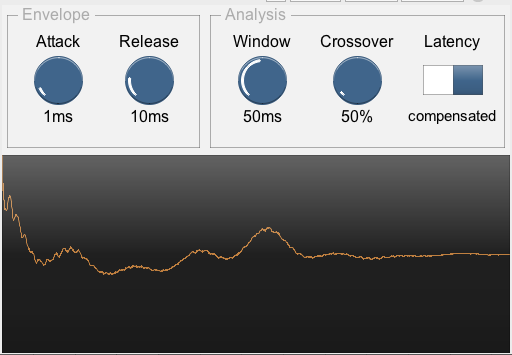
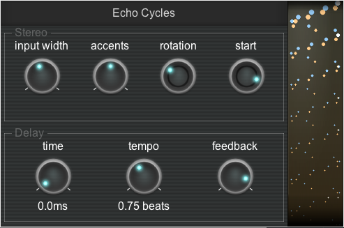
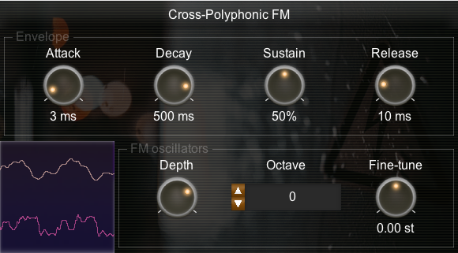
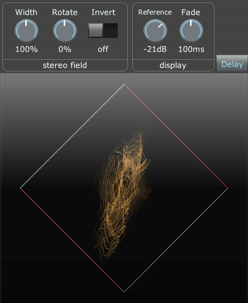
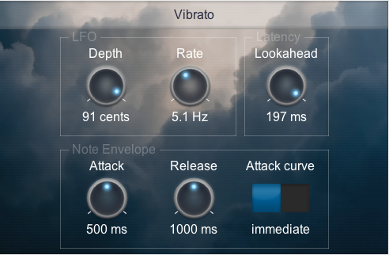
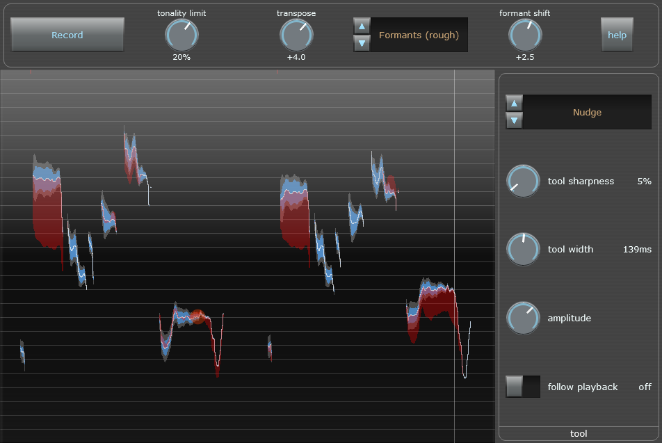

PadSynth
This is a synth that specialises in smooth and thick sounds, with a bank of effects and assignable modulators that are calculated per-note. (audio demo, additional audio demos)
You can find more information and demos for this synth on its main project page.

The per-note effects can re-ordered and renamed, and the modulators can modulate any later effect in the chain, including other modulators.

Hammer And Chord
This effect is a polyphonic string resonator. It can provide its own impulse (to act as a synth) as well as resonating the incoming audio (e.g. a drum loop). (audio demo)

It has two resonators for each note (left and right) and they can be detuned (audio demo).
If your input audio is tonal (e.g. speech) and those frequencies are coming through, the "de-tonal" setting puts a ring-modulator before each resonator to make it atonal. (audio demo)
Humonica
This effect is a harmoniser - it works by periodically sampling the input, converting to a zero-phase impulse, and using that result to resynthesise notes. (audio demo)

The resynthesised notes can sound very "bare", because they are made up of exact frequencies, however they can be softened with chorus. (audio demo with Spring-Box chorus and reverb)
Echo Cycles
This is a feedback delay effect where the echoes move through the stereo space. (audio demo)
This is not done using an LFO, it uses a feedback structure with three delay lines for two channels - this means that the stereo position of the echoes is independent, which is good for building up textures.

Bad Connection
Bad Connection has three features:
- randomly change the audio between two volume levels. It can be used to imitate dodgy radios or glitchy CPU overloads.
- apply volume-independent distortion (response curve has logarithmic ripples)
- tempo-dependent feedback delay line, and the feedback line includes the distortion and volume variation. It can create clean sounds, destruction, or glitchy textures) (demo includes Spring Box for reverb).

Spectrum Matcher
Spectrum Matcher is a tool for comparing the spectrum/timbre of an input against a model, and optionally applying a correction filter.
The bottom half of the screen shows the short-term spectrum (green), the long-term spectrum (yellow), and the long-term reference spectrum (blue).
The top half of the screen shows the current difference between the long-term spectrums (red). If correction is enabled, it shows the correction curve (white) and phase (dotted brown). If the correction is frozen, it shows the frozen correction values in blue.
To disable correction and re-start/clear the long-term spectrum measurements, hit "Reset". To start correction, hit "Correct". Once correction is enabled, hit "Freeze" to set or update the fixed correction values.

It can learn new models from the incoming audio, and save this as a preset for later use:

This effect is quite CPU-intensive, so if you're not using it it could be good to bypass it.
Cross-Polyphonic FM
This effect is a MIDI-controlled frequency-modulator effect. It can be used to add character to an existing sound (such as a different synth).
Multiple MIDI notes produces multiple modulation frequencies. The notes aren't processed separately - they are added together to form the modulation waveform. This means that different notes interact (slightly similar to distortion).

Learning Sampler
This sampler records samples from the incoming audio when in learning mode (selected by a controller switch), and plays them back when in playback mode.
To record the samples, set the appropriate controller to a value of 64 or above. While this controller is down, when you play a MIDI note the sampler will remember the start/end positions in the buffer. When you have recorded all the samples, reset the controller to 0, and it will enter playback mode.

Samples are scaled according to velocity - if you record at velocity 100 and then play back at velocity 110, the output will be louder than the original input.
It currently does handle sample-rate changes.
MIDI Gate
This effect is a simple MIDI-controlled gate. (audio demo)
In "gate" mode, when a MIDI note is down (any MIDI note), the audio is passed through. In "mute" mode, audio passes through when no notes are held down.
The "Max Velocity" control sets the velocity that counts as "down fully". Values between 0 and this value result in a partially opened/closed state. Multiple notes add their velocities together - so two notes with velocity 50 are equivalent to one note with velocity 100.

You can also use it with a fast-paced pattern to produce an effect similar to Bad Connection's random gain variation. (audio demo)
MIDI Harmony
This effect shifts MIDI notes up or down by octaves, to fit within a target range. This can be used to fold whatever chord is being played by some other instrument into a particular region (e.g. one octave around Middle C).
It has a single-note and a chord mode. It also has a built-in sequencer, which can be used as an arpeggiator (so it will play a pattern, but only using octave-shifted notes that you are already holding down).

It also has a MIDI-input mode - this way, instead of the target region or note being fixed (e.g. "one octave around Middle C") it is defined by a second input on a different MIDI channel (channel 16 by default).
This lets you very quickly take one MIDI input, and re-cast it into a different scale or a different chord.
Panalysis
This effect draws the incoming audio on a 2D plot, so you can visualise the stereo field. You can also alter the width/pan using the controls.
- Centre-panned (mono) sounds will draw vertically
- Left-panned sounds will draw angled to the left, right-panned will draw to the right
- If the L+R channels are independent, the graph will have no defined clear direction (may appear round)

It's possible to rotate the field such that hard-left or hard-right inputs will output "inside out" (opposite phase in both output channels). In this case, the Width dial will turn red - double-click the dial to reset it to the maximum "safe" width:

Sandwich Amp
Sandwich Amp is a distortion effect with a set of paired filters on either side, to provide a range of timbres. (audio demo)
The underlying distortion function is tanh() (which is a fairly "soft" distortion, as opposed to a hard clip), but it can be driven quite hard, and an offset can be added to get asymmetrical response.
The "width" parameter widens the sound before distortion and narrows it afterwards, so that the distortion sounds stable and central while preserving the stereo feel of the sound. Similarly, the "filter" section applies a filter before the distortion, and then applies the inverse filter afterwards, which can provide distinctive distortion timbres.
It is also possible to supply a secondary input to the effect (channels 3 and 4) - this audio is added in before the distortion, but then subtracted again afterwards.

Smooth Limiter
This is a brick-wall limiter that aims to keep the correction curve smooth while remaining responsive.
It will recover completely from any peak in a fixed amount of time. Both the attack and release follow a curve that is similar to a sinusoidal segment (1 + cos(x)), with the goal of reducing cross-modulation.

The "distortion" parameter changes the correction mode - at 0%, the correction is applied by scaling the output signal. At 100%, the correction is applied using a non-linear distortion (smooth, not a hard-clip), which can sound good for some applications such as drums. The display in the bottom-left shows the current correction response.
Soft-Bell
Spring-Box
Spring-Box is a chorus/echo effect based on a matrix of 4 delay lines feeding back into each other. The delay lines vary in length according to the chorus parameters, so you can create a range of sounds from choruses and ambiences to space-like reverb effects. (audio demo)
Early echoes can be suppressed to get a smoother sound (the "late bias" control), by using two parallel delay structures with different feedback ratios, and subtracting the results.

Stereo Alignment Delay
A tool to make small delays to individual channels, including a delay analyser.
Delay amount can be displayed in ms or samples. (It is stored in ms, so if you change sample rate then it will preserve delay length regardless of the display format).

The delay analyser detects when one channel is ahead/behind or out of phase with the other - this can be useful when trying to get phases to agree in a multi-mic setup.

Vibrato
This effect it adds vibrato, using MIDI notes to produce a more natural envelope (compared to a constant LFO). Each note resets the vibrato to zero, and it is slowly introduced.
This is most useful for adding vibrato to synths that don't have already have it - for example, ReaSynth.

The "Lookahead" dial controls how much latency is added. With this at 0, sometimes the start of a note can sometimes be momentarily detuned because of ongoing vibrato. To prevent this completely, turn the dial to its maximum value (which scales according to the LFO Rate value).
(background by Tom Barrett on Unsplash)
Warble
Warble is a relatively basic pitch-editing plugin. It analyses incoming audio, stores and displays it on a zoomable graph (middle mouse and scroll wheel). (demo: original, minor correction, major alterations, formant LFO)
There are three tools: nudge, erase and smooth. You use these tools with the mouse (left/right buttons do different things) to define how much it should be shifted. The current change amount is displayed in red.

The formant-correction on the shifting algorithm isn't perfect, so major corrections (e.g. 5 semitones or more) won't sound completely natural.
It doesn't (currently) separate notes from each other, or support automatic correction. I haven't figured out how to make "undo" work properly, so that's something to look at in the future.